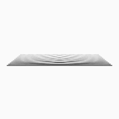

|
The Sound of ShapesVariation of the Bouba/Kiki phenomenon, which involves non-arbitrary, cross-sensory mapping of sound and abstract shapes. |
 |
/* this gif was taken from [https://giphy.com] */
Complex Regional Pain SyndromeExploring connections between different brain areas and pain perception in patients with Complex Regional Pain Syndrome |
|---|